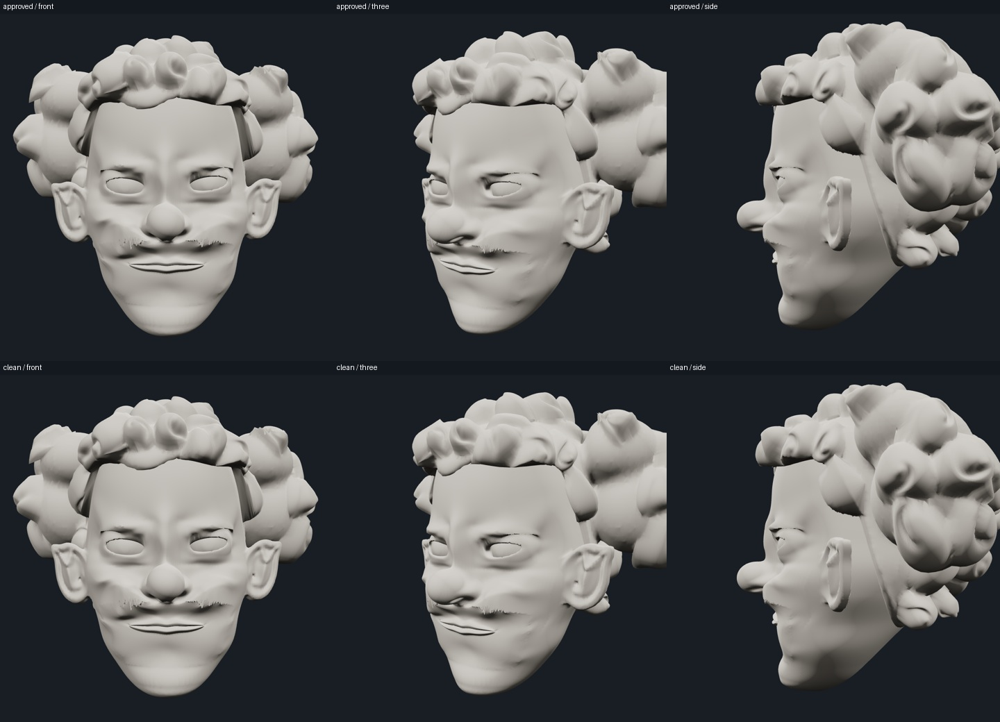
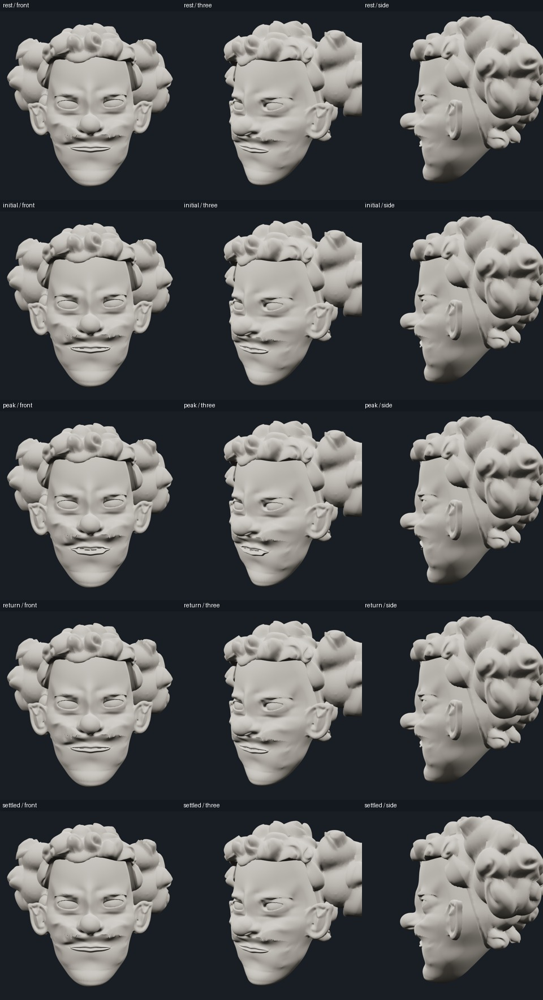
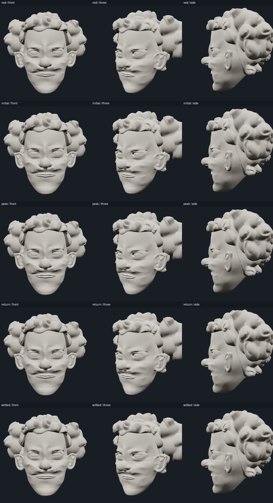
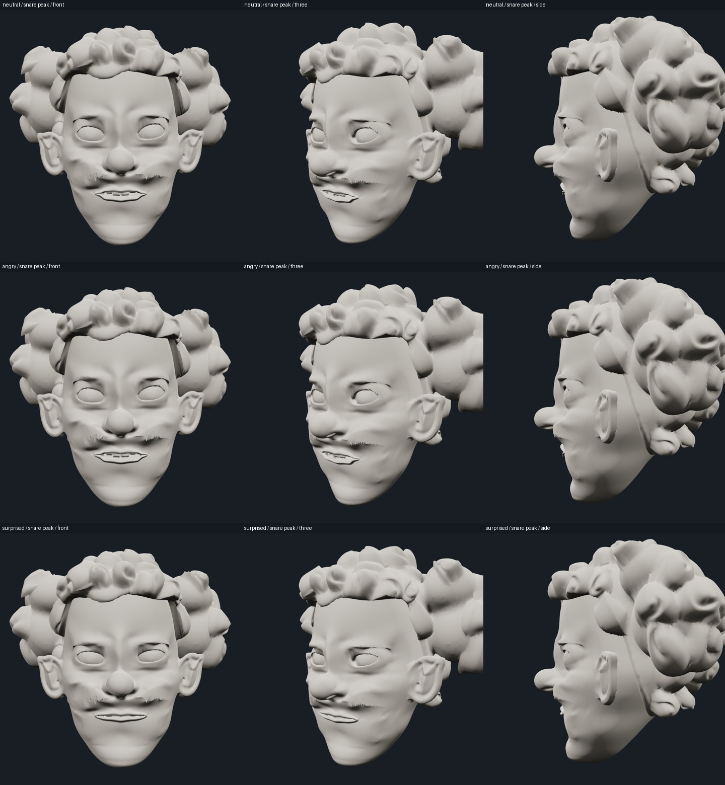

BASELINE RECOVERY · DETERMINISTIC REVIEWThe approved rig, without the mixed-channel regression
Open the clean interactive viewer
What caused the regression
The first prototype loaded the correct protected rig but applied a custom resting pose and unvalidated simultaneous jaw/grin/cheek values. Jaw range clamping alone did not make those combinations safe. The corrected viewer uses exact approved rest, named presets and existing preset blends; default-grin gestures use the locked jaw channel only. No character geometry or rig implementation was modified.
Approved baseline vs clean viewer
Top row: approved checkpoint. Bottom row: new viewer. Columns: front, three-quarter, profile. Rest, all named expressions and the three midpoint blends match geometry and dental transforms exactly. Matched screenshots are pixel-identical (four states × three angles, plus three midpoint front views).

Exact baseline checks · Deployed source audit
Gesture phase review
Each grid shows rest, initial opening, peak, return and settled pose in front, three-quarter and profile views. The original sculpt's surface roughness is preserved; no whole-face cleanup is claimed. Gesture differences are deliberately conservative: opening amount, timing and the selected approved underlying expression.
Kick
Snare

Clap

Percussion
Named underlying expressions
Strongest gesture sampled over Neutral, Angry and Surprised A, using only the approved blend paths. Each returns exactly to its selected starting expression.

Verification scope
Reset, expression selection, approved blend controls, alternating sequence, three-hit sequence, pause/scrub and mobile layout tested. Geometry was inspected at specified times independently of cloud frame rate. This is not an audio-sync or live-rendering performance certification.
Sampling and exact-return checks · Controls and separate CPU/GPU timings